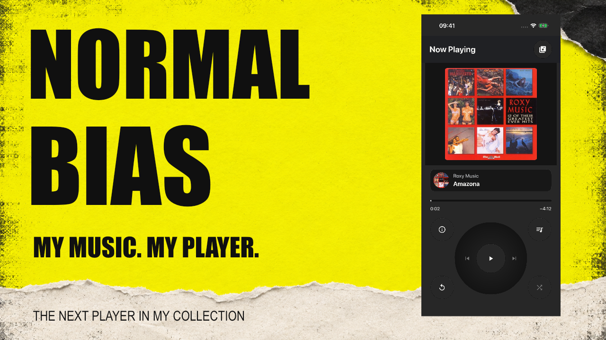
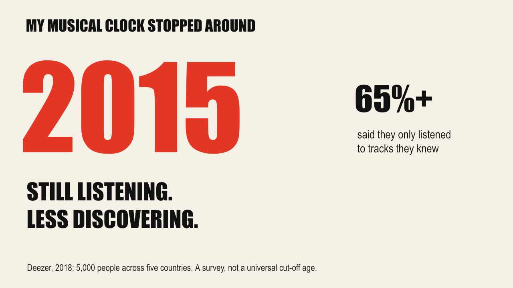
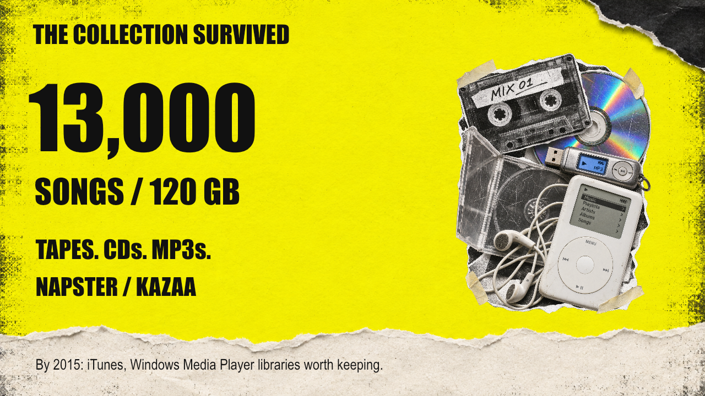
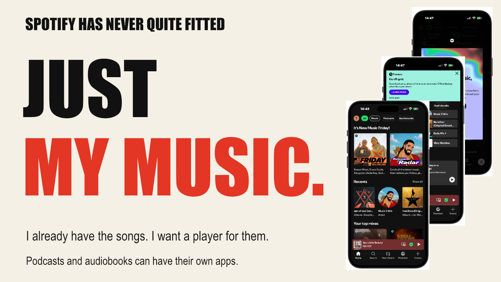
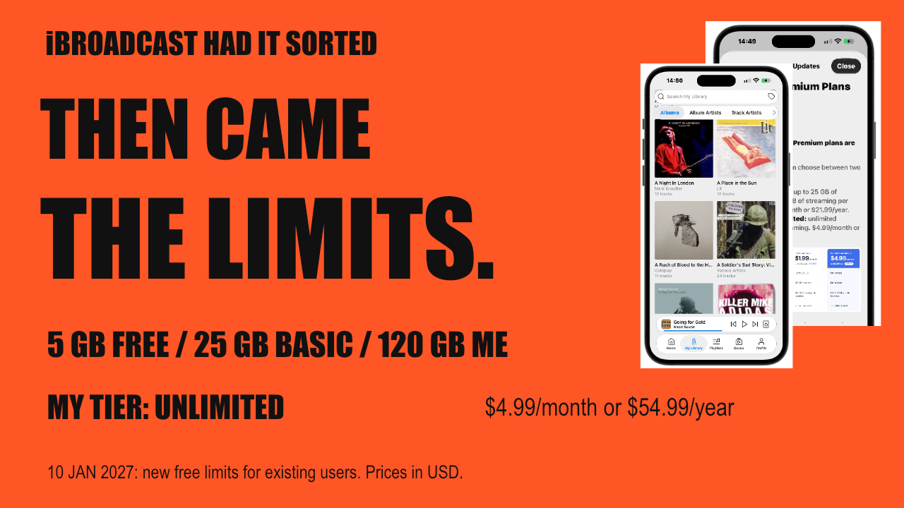
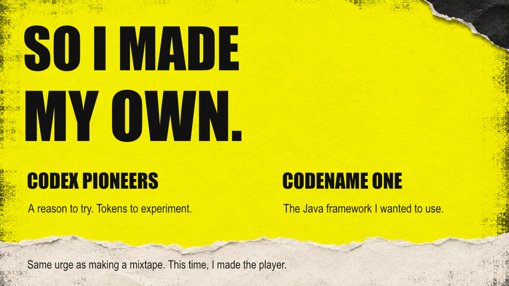
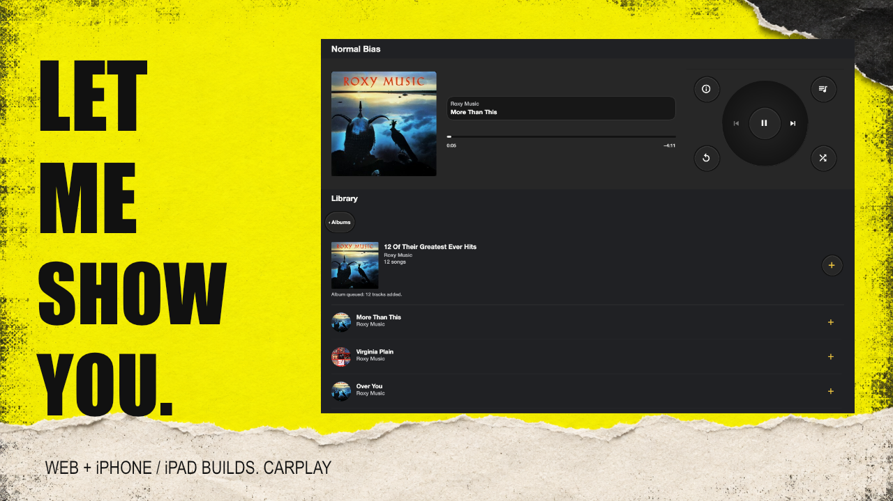

<!doctype html>
<html lang="en"><meta charset="utf-8"><meta name="viewport" content="width=device-width,initial-scale=1">
<title>Normal Bias — my music, my player</title>
<style>body{margin:0;background:#111;color:white;font:16px system-ui}main{height:calc(100dvh - 64px);display:grid;place-items:center}img{max-width:100%;max-height:100%;width:auto;height:auto;object-fit:contain}img[hidden]{display:none}nav{height:64px;display:flex;align-items:center;justify-content:center;gap:16px}button,a{font:inherit;color:inherit}button{background:#333;border:1px solid #888;padding:8px 16px;cursor:pointer}a{margin-left:16px}button:focus-visible,a:focus-visible{outline:3px solid #f0f000}@media print{main{display:block;height:auto}img,img[hidden]{display:block;width:100%;break-after:page}nav{display:none}@page{size:landscape;margin:0}}</style>
<main aria-label="Presentation slides">





</main>
<nav aria-label="Slide controls"><button id="prev" aria-label="Previous slide">Previous</button><span id="count" role="status" aria-live="polite">1 / 7</span><button id="next" aria-label="Next slide">Next</button><button id="full">Fullscreen</button><a href="../project-demo.md">Speaking outline and sources</a></nav>
<script>
const slides=[...document.querySelectorAll('main img')];let current=0;
function show(n){current=Math.max(0,Math.min(slides.length-1,n));slides.forEach((s,i)=>s.hidden=i!==current);document.querySelector('#count').textContent=`${current+1} / ${slides.length}`;document.querySelector('#prev').disabled=current===0;document.querySelector('#next').disabled=current===slides.length-1;}
document.querySelector('#prev').onclick=()=>show(current-1);document.querySelector('#next').onclick=()=>show(current+1);
document.querySelector('#full').onclick=()=>{const p=document.fullscreenElement?document.exitFullscreen():document.documentElement.requestFullscreen();p.catch(()=>{});};
addEventListener('keydown',e=>{if(e.target.closest('button,a'))return;if(['ArrowRight','PageDown',' '].includes(e.key)){e.preventDefault();show(current+1);}if(['ArrowLeft','PageUp'].includes(e.key)){e.preventDefault();show(current-1);}if(e.key==='Home')show(0);if(e.key==='End')show(slides.length-1);});show(0);
</script></html>